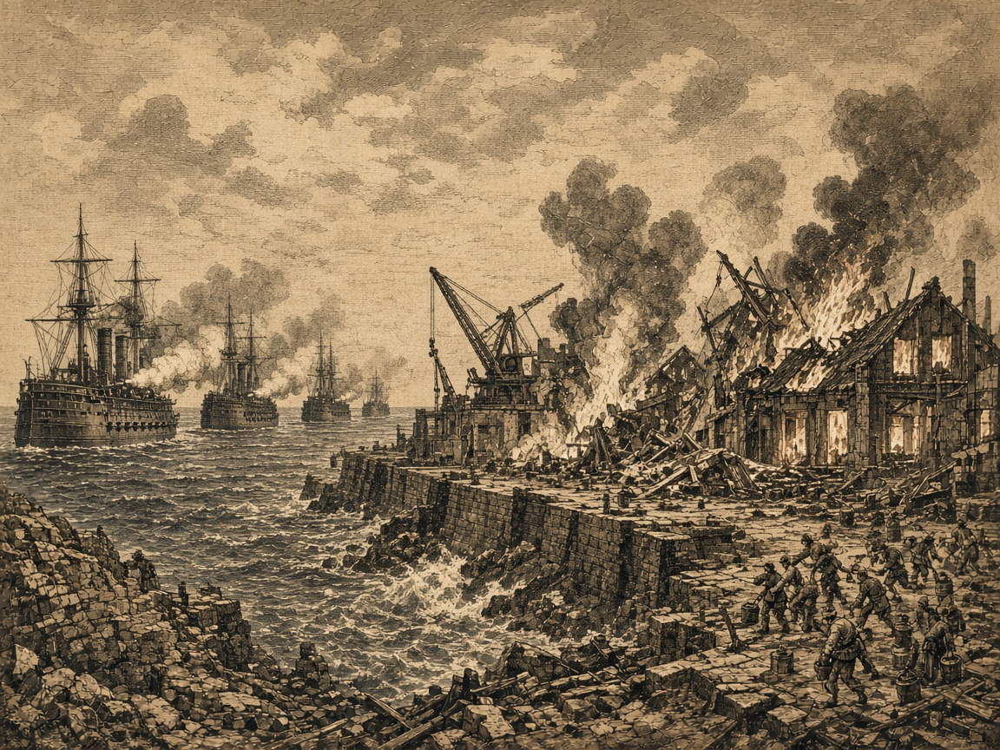
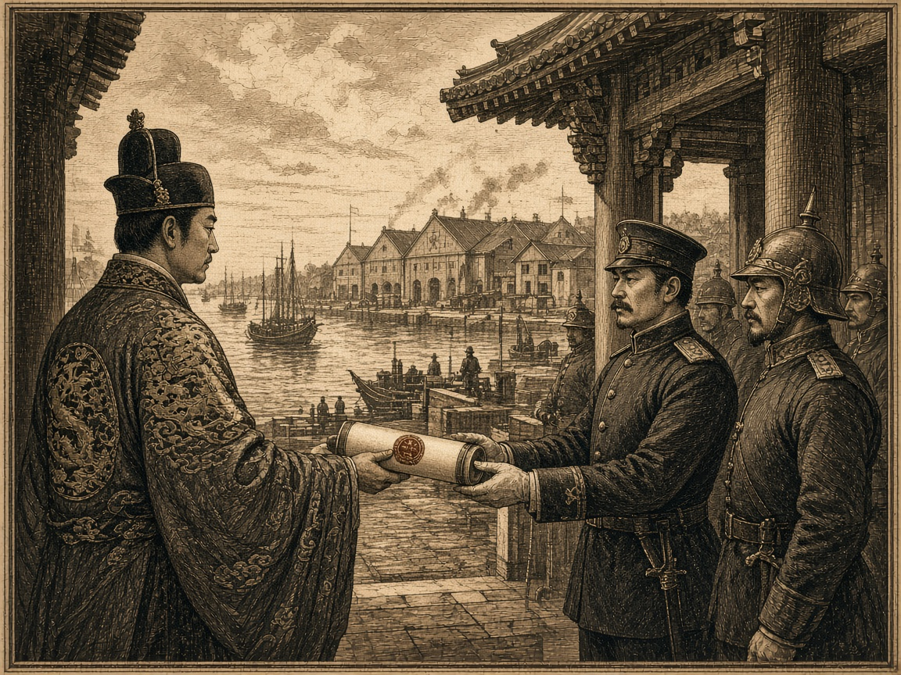
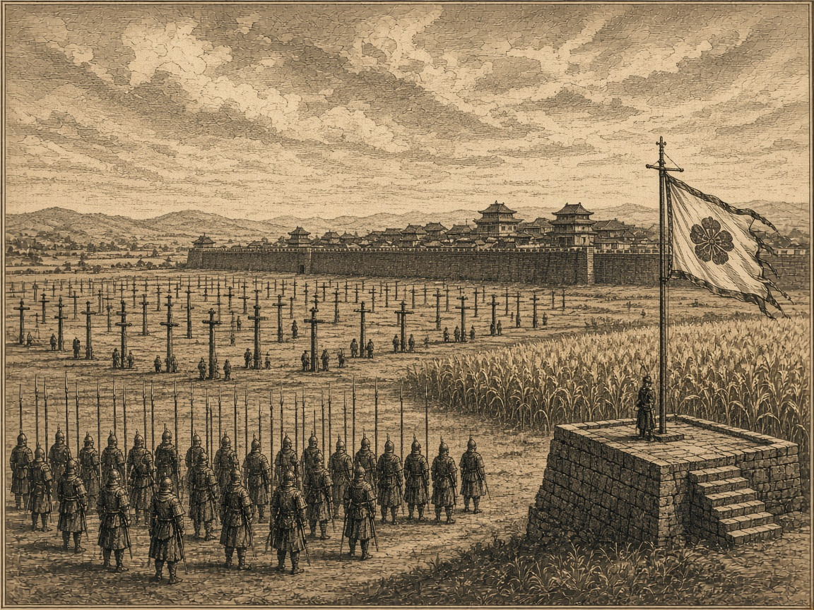

黄砂、オリョルッル軍港を破壊 胡椒はスルガへ宣戦
軍港（29,1）が三発で破壊 藍岬駆逐艦撃沈 火災16件・人口減8万9,900人 画面1.84

【総合部】第206期、黄砂同盟の艦砲はオリョルッル王国の軍港（29,1）へ累計三発命中し、軍港を破壊した。前期に海底油田を奪われた黄砂が、北岸の港へ反撃した形だ。同じ更新で胡椒帝国はスルガへ宣戦布告し、開戦を第211期とした。藍岬共和国連邦の駆逐艦は巡洋艦の攻撃で撃沈され、カペレナ戦の損害は藍岬五千百人・カペレナ四百人。火災は十六件で人口減は八万九千九百人。画面は1.84へ更新され、マニュアルや機雷の情報表示も整った。火災と占領で人口を減らした国もあり、今期の前線では港の破壊と艦艇の撃沈が続く。詳報は2〜6面。

金野八千三百人 朱川はなお削られる
金野伯爵領となのです主義人民共和国の戦線では金野八千三百人・なのです千三百人。朱川共和国はオラニウム連邦との戦いで三千八百人を失い、人口は二千百人。橙原は五千百人、スルガは三千人。オリョルッルは泰平へ停戦を打診したが、第207期の開戦予定は残る。国特集は9面の白波王国。
火刑を逃れた金野伯、貴族派を再結集
数号前、暴徒に火刑に処されたと伝えられた金野伯爵が生存していたことが分かった。火刑台で命を落としたのは、伯爵とよく似た義弟だった。伯爵本人は邸内のクローゼットに身を潜め、暴動のさなかを生き延びていたという。貴族派は指導者を失ったと思い込み、領内の諸勢力は離散しかけていたが、伯爵の帰還を受けて再びまとまり、叛徒を破った。
制圧後、伯爵は暴動の首謀者を全員処刑し、領内の統治権を掌握した。復権の手は早く、国外から食料を買い入れて、戦乱で細った備蓄の立て直しに着手。さらに港では、なのです軍に対する攻勢を続けている。火刑の誤報から生還、反乱鎮圧、粛清、前線への反撃へ――伯爵の復帰は、領内の秩序を取り戻す一方、報復を恐れる市民と貴族派の緊張を残した。八千三百人の損害を出した今期も、金野軍は徴兵と部隊設置を進め、港の戦線を支えている。
